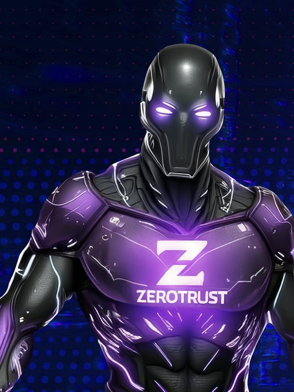

Identidad · Accesos · Zero Trust
ZeroTrust
Modelo de seguridad sin perímetro. Verifica explícitamente cada acceso, asume brecha y aplica privilegio mínimo en identidad, dispositivo, red, aplicación y datos.
- Verifica explícitamente cada acceso · asume brecha · privilegio mínimo
- Cinco dominios: identidad, accesos, aplicaciones, redes y datos
Servicios técnicos 5
- Identidad
- Sanidad de identidades · gestión de identidades y accesos (IAM) · autenticación multifactor (MFA)
- Control de Accesos
- Microsegmentación · ZTNA · acceso basado en atributos · SD-WAN · Digital Experience
- Aplicaciones
- CASB · Control Web · WAF · DB Firewall · seguridad de IA y APIs
- Redes y nube
- NGFW · NTA · SSE · Cloud Security · postura de seguridad
- Seguridad de datos
- DLP · clasificación e inventario · gobierno de datos
NIST 2.0
ISO 27001
OKTA
Netskope
Fortinet